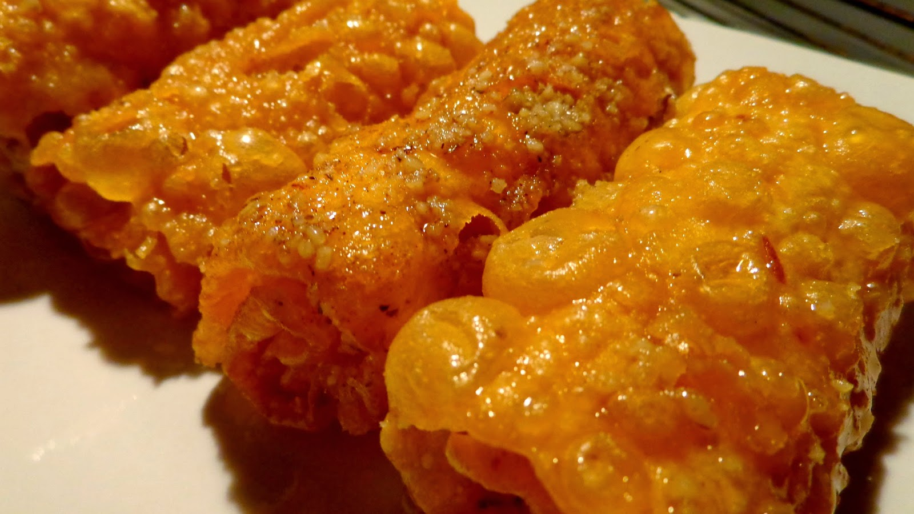

Δίπλες

Υλικά(για ένα φύλλο)
- 2 αβγά
- 1 σφηνάκι ούζο ή κονιάκ
- Λίγη ζάχαρη
- Αλεύρι δυνατό
Για το σιρόπι
- 1 1/2 φλιτζάνι ζάχαρη
- 1 φλιτζάνι νερό
- 3 κουταλιές μέλι
Εκτέλεση
- Χτυπάμε αβγά, άρωμα, ζάχαρη
- Προσθέτουμε όσο αλεύρι παρει να γίνει εύπλαστη ζύμη
- Ανοίγουμε σε φύλλο
- Με το ειδικό ροδάκι χωρίζουμε σε λωρίδες
- Τηγανίζουμε σε καυτό λάδι, να ροδίσουν κι από τις 2 πλευρές.
- Βράζουμε τα υλικά για το σιρόπι και περνάμε τις δίπλες
- Αραδιάζουμε σε πιατέλα και πασπαλίζουμε με χοντροκομμένο καρύδι και κανέλα!
Λίγες ακόμα συμβουλές
Στο τηγάνισμα, με πιρούνα τις τυλίγουμε ή όταν ανοίξουμε το φύλλο μπορούμε να κόψουμε φιογκάκια όπως στη συνταγή "σπιτικά ζυμαρικά"!
Αν θέλετε να κάνετε περισσότερες, διπλασιάστε τα υλικά. Καλές γιορτές!